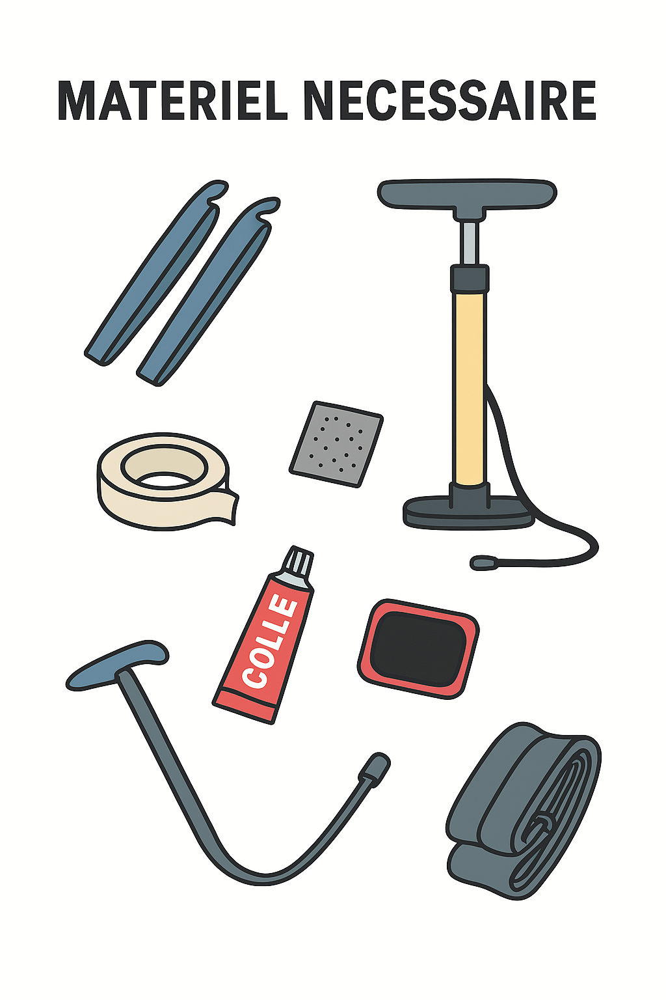
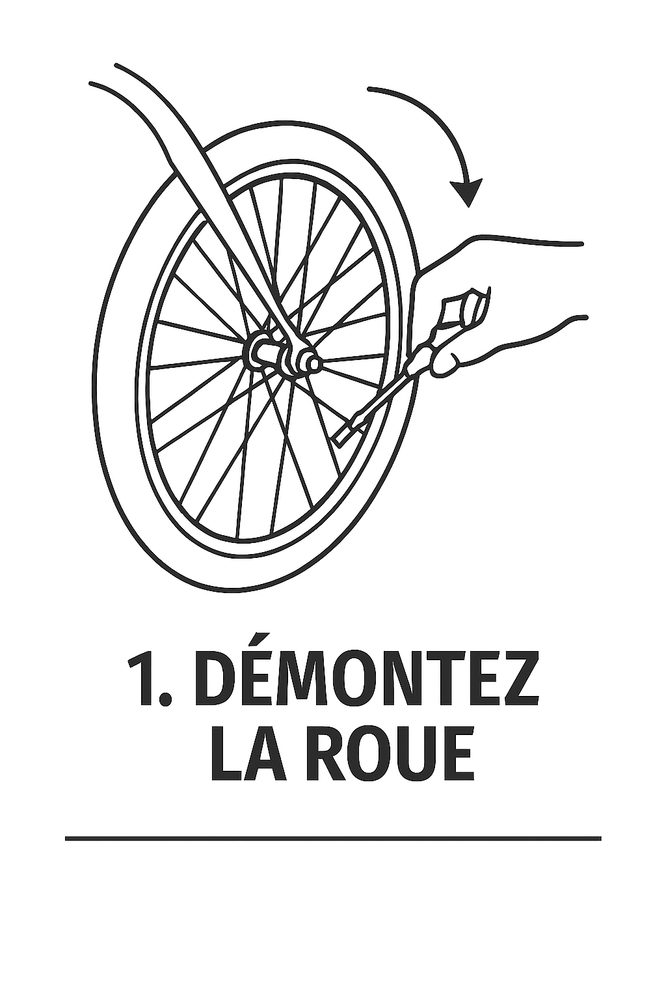
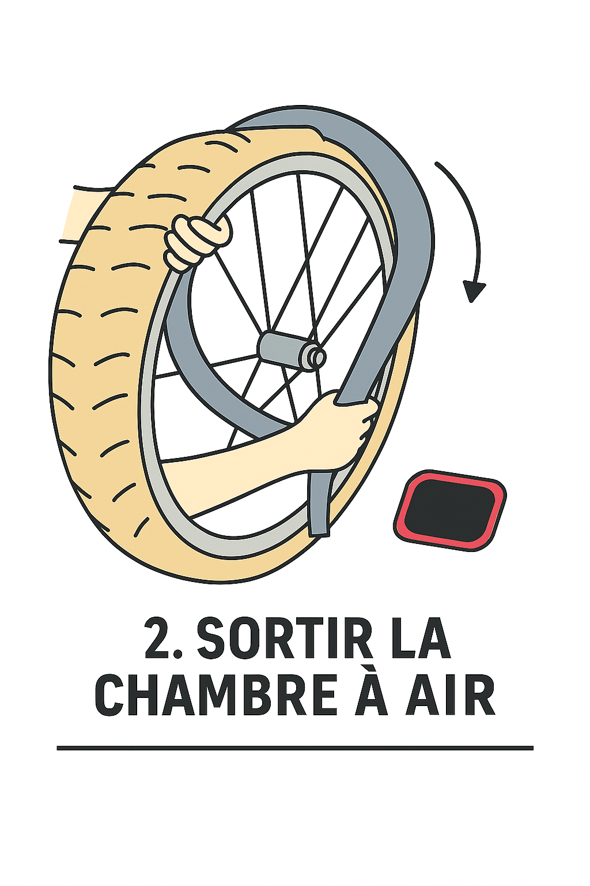
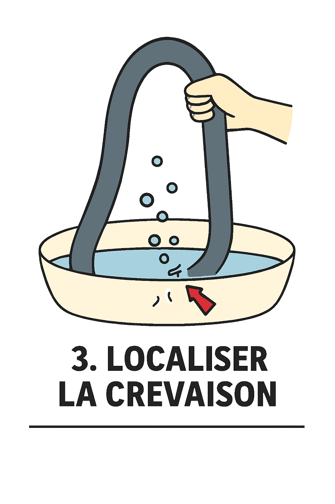
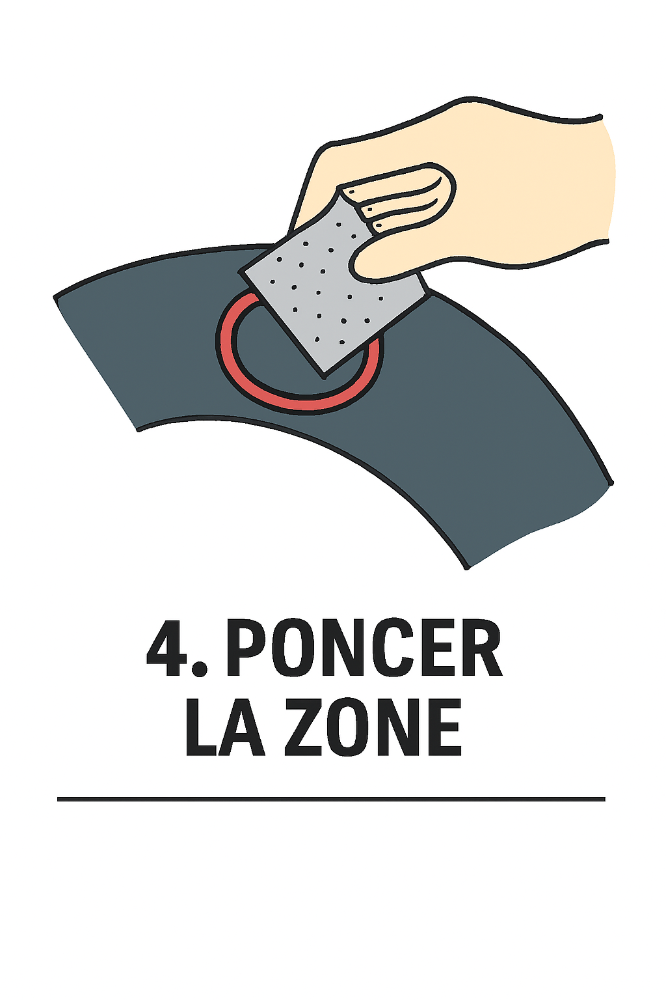
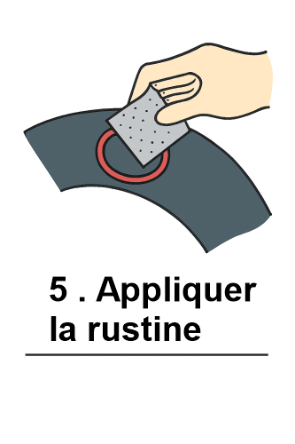
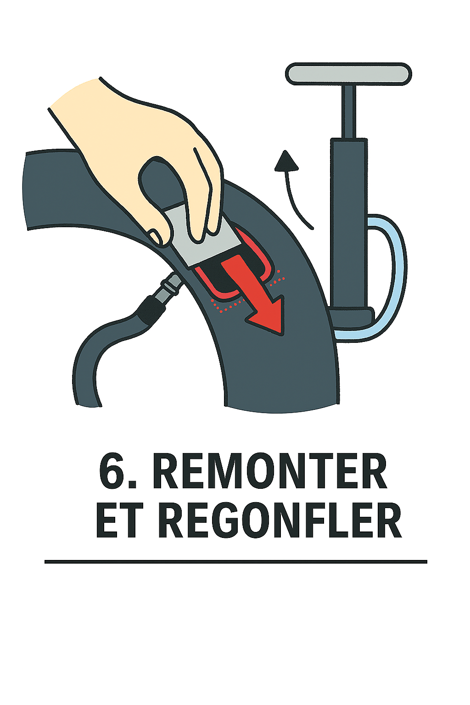

Preparation : materiels
- Démonte-pneus
- Pompe à vélo ou cartouche de CO₂
- Bassine d’eau ou chiffon humidE
- Papier de verre ou grattoir
- Colle spéciale rustine
- Rustine adaptée
- Chambre à air de secours (optionnel)
- gants

étape 1 : - Retirer la roue
- - Démonte la roue concernée (avant ou arrière).
- - Dégonfle complètement le pneu.
Muni toi de la bonne clef pour les roues si besoins, et aussi une paire de gants pour eviter de te blesser et salir.

étape 2 : Sortir la chambre à air
- Utilise les démonte-pneus pour décoller un côté du pneu.
- Tire délicatement la chambre à air hors du pneu.
L'operation peut etre salisante selon l'etat de la roue.
Profite en pour verifier l'interieur du pneumatique.
Recherche d'eventuel epine, clou, ou autre objet qui aurait pu provoquer la crevaison.
verifie l'etat general du pneu

étape 3 : Localiser la crevaison
- Gonfle légèrement la chambre à air.
- Plonge-la dans l’eau ou passe un chiffon humide dessus.
- Repère les bulles ou le sifflement d’air.
- Marque le trou avec un stylo ou un morceau de ruban.

étape 4 : Préparer la zone
- Sèche bien la zone autour du trou.
- Ponce légèrement avec du papier de verre pour améliorer l’adhérence
Etape essentiel de la reparation. à ne surtout pas negliger.

étape 5 : Appliquer la rustine
- Étale une fine couche de colle sur la zone poncée.
- Attends que la colle devienne mate (environ 1 minute ou plus selon la temperature ambiante).
- Pose la rustine et presse fermement pendant 1 à 2 minutes.
Avec ce genre de colle, il ne faut pas etre trop presser d'appliquer la rustique.

étape 6 : Remonter et regonfler
- Replace la chambre à air dans le pneu.
- Remets le pneu sur la jante.
- Regonfle à la pression recommandée.
- Vérifie que le pneu est bien en place et que la roue tourne librement.
Pour remettre en place, gonfle legerement la chambre à air.
Tu peux t'aider de demonte pneu pour le remontage, mais attention au risque de pincer la chambre à air
Fini par la valve.